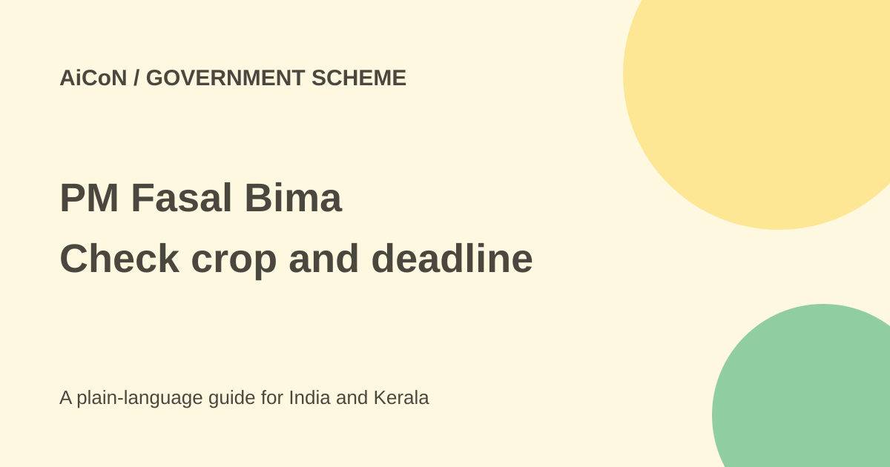

PM Fasal Bima: crop premiums, enrolment and claim checks
PM Fasal Bima Yojana insures eligible notified crops against specified risks. Farmer premium rates are capped, but coverage depends on your crop, area, season and timely enrolment. A crop loan is not proof that every loss will be paid.

Who can be covered?
Farmers need an insurable interest in the notified crop and land. Tenant farmers and sharecroppers can be eligible when they provide the documents accepted by their state. Your district, crop and season must actually be notified. A national scheme page does not confirm a specific Kerala farm's coverage.
Insurance covers defined risks under the chosen notification and policy. A failed harvest does not automatically create a payment. Keep the crop, area, premium receipt and insurance record correct before the enrolment deadline.
What does the farmer pay?
The usual maximum farmer premium is 2% of the sum insured for Kharif food and oilseed crops, 1.5% for Rabi food and oilseeds, and 5% for commercial and horticultural crops. These percentages are not percentages of the total premium charged by the insurer.
The government subsidises the remaining premium under the scheme rules. The claim ceiling is linked to the notified sum insured and assessed loss, not merely the amount you paid. Ask the insurer for the exact sum insured and farmer premium for your crop.
Voluntary scheme, but check crop-loan processing
The 2023 guidelines say the scheme is optional for all farmers, including qualifying short-term crop-loan or KCC farmers. Existing loanee farmers who do not want coverage must give the prescribed declaration to their loan branch at least seven days before the season's enrolment cut-off. Those who do not submit the declaration are covered through that process.
Do not describe this as either universally compulsory or as requiring every crop-loan farmer to make a fresh online application. Ask the bank how it records your choice, crop and area, and keep the acknowledgement. Other farmers can enrol through the authorised channels.
How to check and apply
- Read your state and season notification on the official portal or ask the agriculture office for it.
- Confirm the exact crop, area, insurer, sum insured and closing date.
- Ask which land, tenancy, sowing, identity and bank documents are required. Do not assume another state's checklist applies.
- If you have a crop loan, check the branch's coverage and opt-out record before the deadline.
- Use your bank, authorised CSC, insurer or official portal route for enrolment.
- Compare the policy record with the crop and area actually sown. Correct errors through the official channel promptly.
- Keep the receipt, application number, insurer details and loss-reporting instructions.
- If loss occurs, report it immediately through the prescribed route and keep evidence. Different risks have different reporting and assessment rules.
For Kerala farmers
Do not assume a plantation crop has the same cover as a food crop, or that a weather-based insurance policy and PMFBY use the same claim trigger. Ask the local agriculture office about the current crop notification. This guide did not verify an individual farm or a live Kerala enrolment window.
The portal gives 14447 for queries, grievances and crop-loss reporting. Use official contacts and do not pay an unknown agent an extra approval fee. Never disclose a banking PIN or OTP to someone claiming they can guarantee a payout.
Free or paid?
This is subsidised insurance, not a free cash benefit. The farmer pays the applicable premium. Verify the actual amount, crop and cover before paying. No single rupee total can apply to every farm.
What changed since the original post?
We corrected the loose crop-loan wording using the newer guidelines. Older PDFs still online contain compulsory-coverage wording, and some summary text is inconsistent. The dated operational rule and your current season notification matter. No application or insurance purchase was made.
Frequently asked questions
Is every crop covered?
No. Crop, area and season must be notified.
Is it compulsory for every borrower?
The current guideline says optional, with an opt-out process for existing qualifying loanee farmers.
Does a paid premium guarantee every loss claim?
No. Policy risks, assessment and reporting rules still apply.
Sources: Official scheme portal · 2023 operational guidelines · PIB scheme explanation. Checked 7 October 2026.